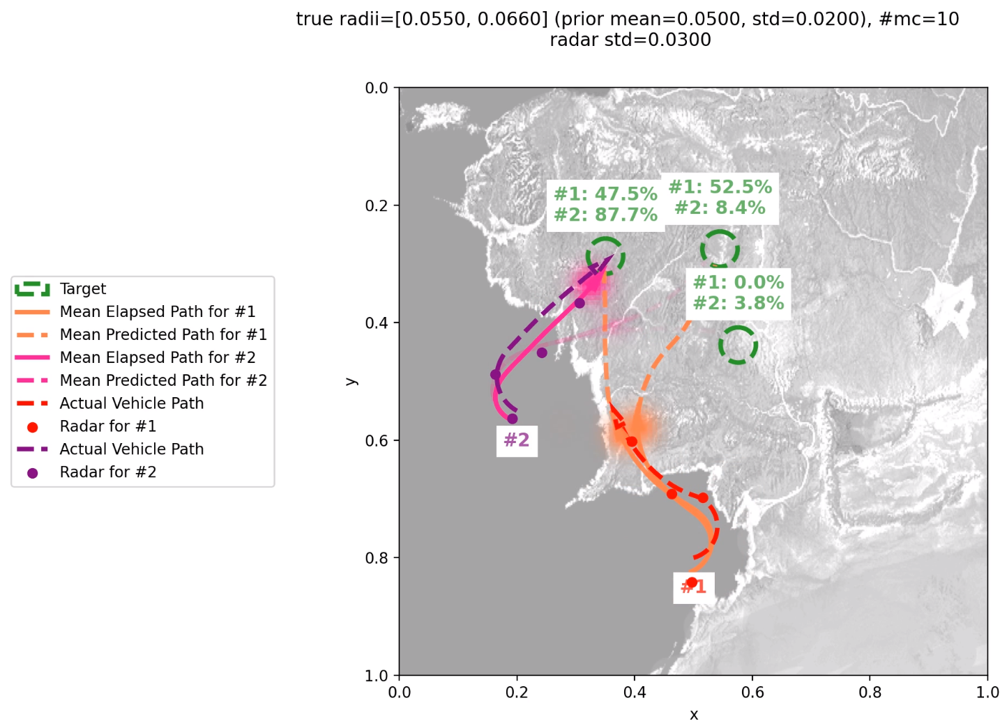
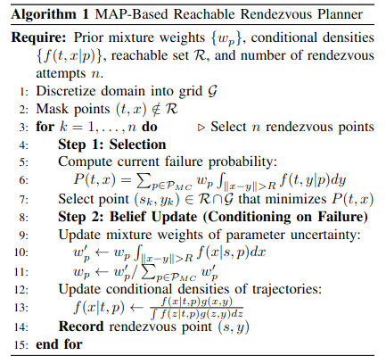
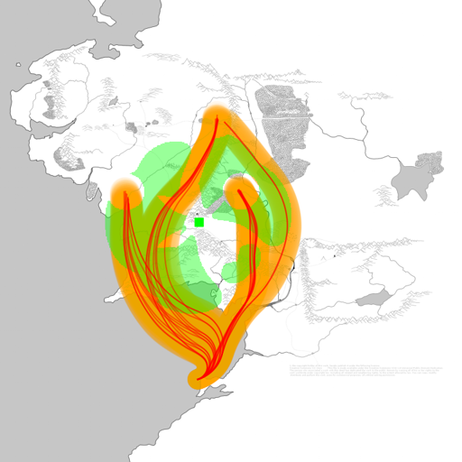
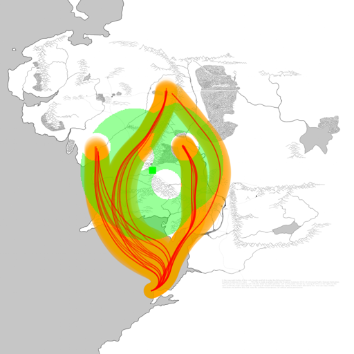

Rendezvous Planning from Sparse Observations of Optimally Controlled Targets
Demonstration: Possible target trajectories and computed rendezvous paths for the seeking agents.
Predicting the future trajectories of intelligent, goal-oriented agents is a significant challenge when observations are intermittent and noisy. We develop a probabilistic framework for rendezvous planning that identifies optimal spatiotemporal coordinates to intercept a fast-moving target using a set of significantly slower seeking agents. By leveraging the underlying optimality of the target's decision-making, our method outperforms traditional reactive strategies in velocity-disadvantaged regimes.

The "Information Gap" in Tracking
Real-world tracking often suffers from an "information gap" caused by sparse data and uncertainty regarding a target's kinematics. Traditional methods like Kalman filtering often fail here because they do not account for the reachability properties or the goal-oriented behavior of the target.
Our approach models the target as following an approximately optimal path toward an unknown goal. We represent this uncertainty through a Gaussian Process (GP), using a Maximum A Posteriori (MAP) trajectory as a prior to provide a robust stochastic model for prediction.
Core Methodology
The framework operates through a sequential decision structure that ensures each attempt is informed by a consistent representation of the remaining search space.
- Stochastic Trajectory Estimation: We compute a MAP trajectory consistent with assumed ODE dynamics and use Gaussian Process Regression (GPR) for uncertainty quantification and bias correction.
- Greedy Sequential Planning: Rendezvous points are selected by minimizing the conditional failure probability under the current belief.
- Bayesian Belief Updates: After each unsuccessful attempt, the distribution is updated by conditioning on the failure, refining both parameter weights and trajectory distributions.

Reachability and Operational Constraints
To ensure feasibility, the algorithm only considers rendezvous points within the reachable region (R) of the seeking agents. This allows us to enforce complex constraints that reactive laws cannot handle, such as specific contact angles (e.g., side-on approaches) even when the seeker is only 30% as fast as the target.

Directed: Reachable region with constrained initial facing direction.

Undirected: Reachable region with unconstrained initial facing direction.
Key Advantages & Technical Versatility
This framework is the first of its kind capable of planning successful rendezvous in velocity-disadvantaged regimes. While traditional reactive laws typically require the seeking agent to be faster than the target, our method enables successful interception even when the seeker is significantly slower (e.g., 30% of the target's speed) by anticipating the target's goal-oriented behavior.
Beyond speed differences, the algorithm is built to handle the complex operational constraints of real-world missions. Because we optimize over the target's entire predicted trajectory distribution, we can strictly enforce:
- Initial Heading: Accounting for the seeker's starting orientation.
- Rendezvous Angle: Ensuring the seeker approaches from a specific side (e.g., for mid-air refueling or docking).
- Dynamic Obstacles: Navigating around hazards while maintaining the interception path.
- Curvature Constraints: Respecting the physical turning radius limits of the agents (Dubins car dynamics).
Applications
This systematic framework is designed for high-stakes autonomous applications:
- Unmanned Aerial Vehicle (UAV) mid-air refueling.
- Spacecraft servicing and debris removal.
- Search and rescue missions.
- Missile defense and maritime autonomous surface vessel operations.